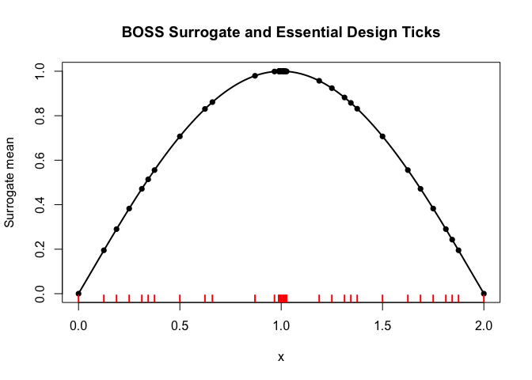
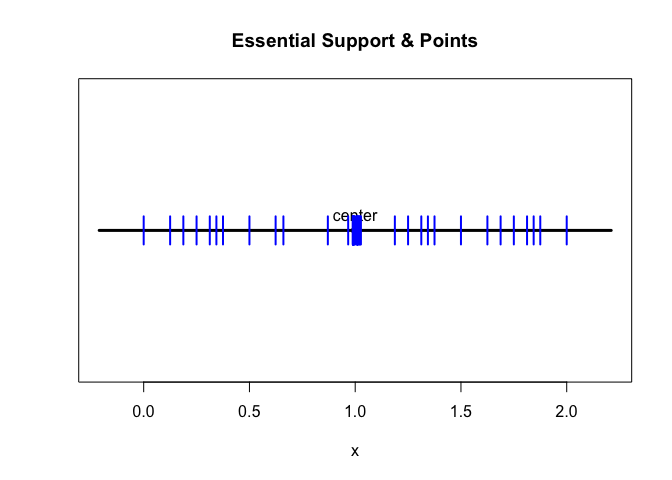
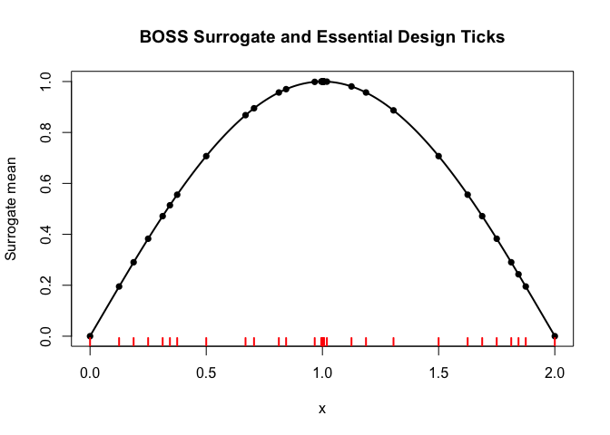
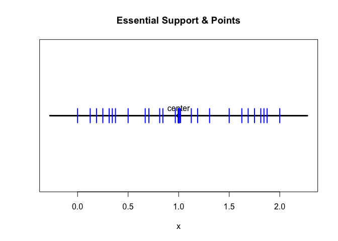
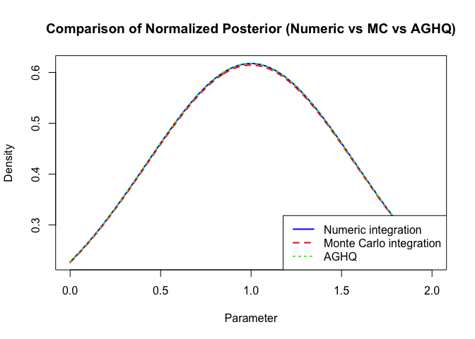
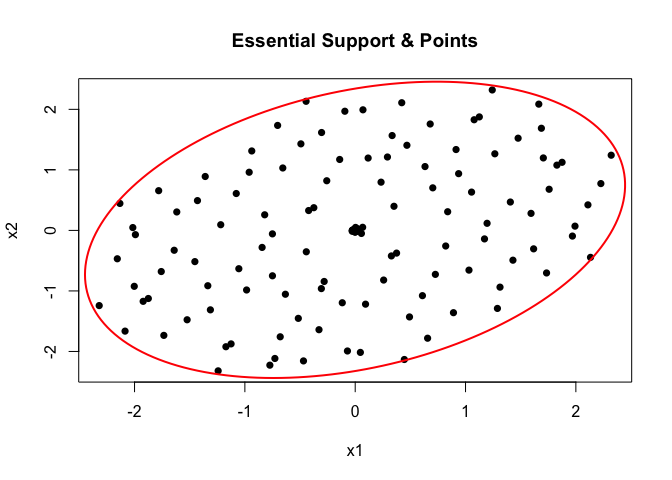
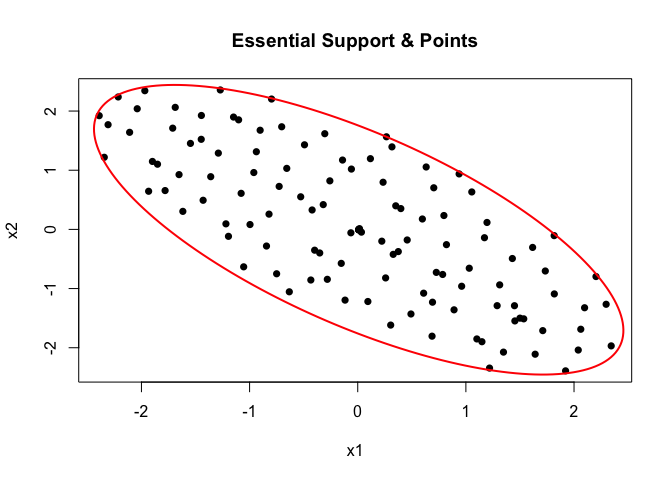
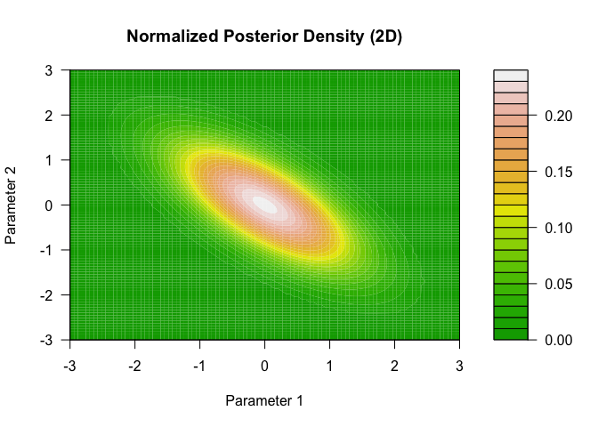

The goal of BOSS is to perform scalable approximate Bayesian inference for complex hierarchical models, with a (log) marginal likelihood that is intractable and/or expensive to compute.
Installation
You can install the development version of BOSS from GitHub with:
# install.packages("pak")
pak::pak("davidolohowski/BOSS")Example
This is a basic example which shows you how to solve a simple problem in 1-D.
Assume the true (log) marginal likelihood is given by the following sinusoidal function:
We can use the boss function to approximate the (log) marginal likelihood of this function, specifying the objective function, the dimension of the problem, and the bounds for the BO optimization. The alpha parameter controls the level of the essential support, while h controls the target fill-in distance of the design points.
# A automatic implementation
br <- boss(f1d, D = 1, method = 'modal',
modal_opts = list(lower = 0, upper = 2),
alpha = 0.05, h = 0.1, verbose = 1)
#> Stage 1: Bayesian Optimization via Mode-Seeking Surrogate (BOSS) started.
#> Stage 1: BOSS finished.
#> Total time taken: 0.81 seconds.
#> Start updating Hessian at the mode...
#> Hessian updated in 0.02 seconds.
#> Stage 2: Fill-in to target spacing h = 0.1
#> fill in: added 17 point(s).
#> Warning in (function (boss_result, h, max_add = 100, n_sample_max = 10000, :
#> Updated fill-in distance is (0.104862) > target h (0.100000); Adjust your
#> expectation by either increasing max_add and n_sample_max or increasing h.
#> Final update completed in 0.09 seconds.
plot(br)

For more advanced applications, the user can also manually perform each step of the BOSS algorithm, as shown below:
# A manual implementation
br <- BOSS_modal(func = f1d, D = 1,
lower = 0, upper = 2,
update_step = 5,
quad = FALSE,
max_iter = 20,
verbose = 1)
#> Stage 1: Bayesian Optimization via Mode-Seeking Surrogate (BOSS) started.
#> Stage 1: BOSS finished.
#> Total time taken: 0.43 seconds.
br <- update_hessian(br)
br <- compute_essential_support(br, alpha=0.05)
br <- construct_essential_designs(br)
br <- compute_fill_in(br)
br <- fill_in(br, h = 0.1, verbose = 1, max_add = 100)
#> fill in: added 16 point(s).
br_update <- update_boss(br)
plot(br_update)

Take a look at the normalized posterior:
br1 <- get_normalized_posterior(br_update, int_method = "mc", nsamples = 10000)
br2 <- get_normalized_posterior(br_update, int_method = "numeric")
br3 <- get_normalized_posterior(br_update, int_method = "aghq", aghq_K = 10)
# Define grid
x_vals <- seq(0, 2, length.out = 300)
# Evaluate both posteriors
post_mc <- sapply(x_vals, br1$normalized_posterior)
post_num <- sapply(x_vals, br2$normalized_posterior)
post_aghq <- sapply(x_vals, br3$normalized_posterior)
# Plot
plot(
x_vals, post_num, type = "l", lwd = 2, col = "blue",
xlab = "Parameter", ylab = "Density",
main = "Comparison of Normalized Posterior (Numeric vs MC vs AGHQ)"
)
lines(x_vals, post_mc, col = "red", lwd = 2, lty = 2)
lines(x_vals, post_aghq, col = "green", lwd = 2, lty = 3)
legend(
"bottomright",
legend = c("Numeric integration", "Monte Carlo integration", "AGHQ"),
col = c("blue", "red", "green"), lty = c(1, 2, 3), lwd = 2
)
2-D Example
Test the BOSS algorithm on a 2-D Gaussian density. The objective function here is the log-density of a randomly generated bivariate Gaussian random variable.
set.seed(1234)
rho <- runif(1, min = -0.9, 0.9)
f2d <- function(x) mvtnorm::dmvnorm(x, rep(0,2), sigma = matrix(c(1,rho, rho, 1), 2, 2), log = T)
# A automatic implementation
br3 <- boss(f2d, D = 2, method = 'modal',
modal_opts = list(lower = -c(3,3), upper = c(3,3)),
alpha = 0.05, h = 0.1, verbose = 1)
#> Stage 1: Bayesian Optimization via Mode-Seeking Surrogate (BOSS) started.
#> Stage 1: BOSS finished.
#> Total time taken: 0.94 seconds.
#> Start updating Hessian at the mode...
#> Hessian updated in 0.03 seconds.
#> Stage 2: Fill-in to target spacing h = 0.1
#> Warning in (function (boss_result, h, max_add = 100, n_sample_max = 10000, :
#> Number of points to be added is greater than max_add. Required h may not be
#> achieved.
#> fill in: added 100 point(s).
#> Warning in (function (boss_result, h, max_add = 100, n_sample_max = 10000, :
#> Updated fill-in distance is (0.446202) > target h (0.100000); Adjust your
#> expectation by either increasing max_add and n_sample_max or increasing h.
#> Final update completed in 0.55 seconds.
plot(br3)
Similarly, users can also have more modular control over the procedure:
br3 <- BOSS_modal(func = f2d, D = 2,
lower = -c(3,3), upper = c(3,3),
initial_design = 10,
quad = F,
update_step = 10,
max_iter = 100,
verbose = 1)
#> Stage 1: Bayesian Optimization via Mode-Seeking Surrogate (BOSS) started.
#> Stage 1: BOSS finished.
#> Total time taken: 1.06 seconds.
br3 <- update_hessian(br3)
br3 <- compute_essential_support(br3, alpha = 0.05)
br3 <- construct_essential_designs(br3)
br3 <- compute_fill_in(br3, n_samples = 100000)
br3 <- fill_in(br3, h = 0.1, max_add = 100)
#> Warning in fill_in(br3, h = 0.1, max_add = 100): Number of points to be added
#> is greater than max_add. Required h may not be achieved.
#> Warning in fill_in(br3, h = 0.1, max_add = 100): Updated fill-in distance is
#> (0.439869) > target h (0.100000); Adjust your expectation by either increasing
#> max_add and n_sample_max or increasing h.
plot(br3)
br3_update <- update_boss(br3)
br3_update$surrogate(c(1,1))
#> [1] -4.784129The posterior can be computed as before:
br3_update <- get_normalized_posterior(br3_update, int_method = "mc", nsamples = 10000)
# plot the posterior
x_seq <- seq(-3, 3, length.out = 100)
y_seq <- seq(-3, 3, length.out = 100)
# Make grid
grid <- expand.grid(x = x_seq, y = y_seq)
# Evaluate the posterior on the grid
dens_vals <- apply(as.matrix(grid), 1, br3_update$normalized_posterior)
dens_matrix <- matrix(dens_vals, nrow = length(x_seq), byrow = FALSE)
# Plot
filled.contour(
x_seq, y_seq, dens_matrix,
color.palette = terrain.colors,
xlab = "Parameter 1",
ylab = "Parameter 2",
main = "Normalized Posterior Density (2D)"
)